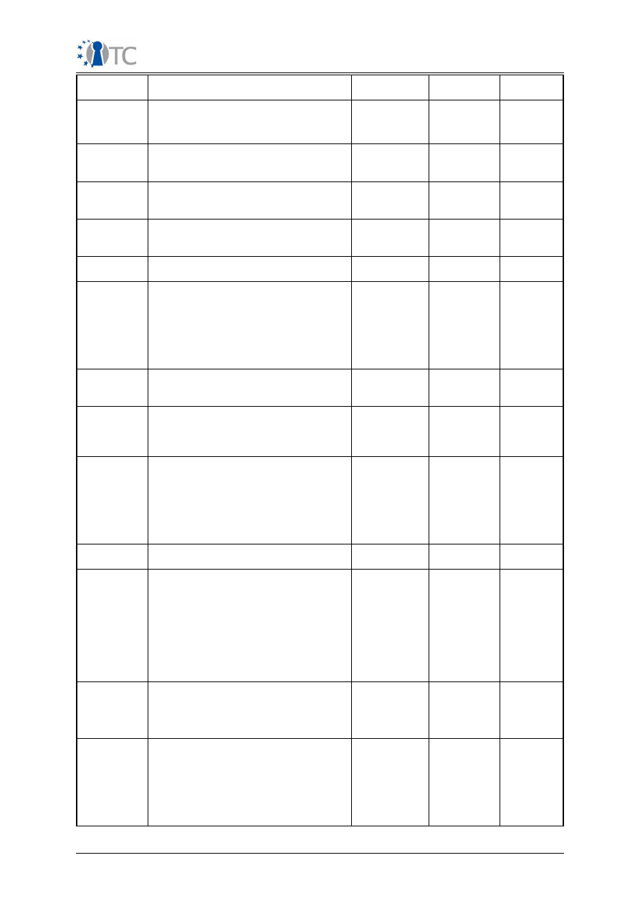

Activity Report period 3
D01.6 Periodic Reports (M25-M42)
Plan for using and disseminating the
knowledge
Project number
IST-027635
Project acronym
Open_TC
Project title
Open Trusted Computing
Deliverable type
Report
Deliverable reference
number
IST-027635/D01.6/1.1
Deliverable title
Plan for Using and Disseminating the
Knowledge
WP contributing to the
deliverable
WP01
Due date
April 2009 - M42
Actual submission date
June 3
rd
, 2009
Responsible Organisation
TEC
Authors
TEC
Abstract
This document describes the currently
available results of the OpenTC project
as well as the exploitation taken place
or planned in the near future by the
partners.
KeywordsKnowledge,
dissemination
Knowledge, dissemination
Dissemination level
Public
Revision
1.1 Final
Instrument
IP
Start date of the
project
1
st
November 2005
Thematic
Priority
IST
Duration
42 months
Open_TC Activity Report period 3
1/33
Activity Report period 3
Table of Contents
1 Section 1 – Exploitable knowledge and its use..........................................................3
1.1 Introduction.........................................................................................................3
1.2 Overview of exploitable knowledge....................................................................3
1.3 Description of results...........................................................................................9
1.3.1. OpenTC Java TPM Tools (jTPM-Tools)...........................................................9
1.3.2. OpenTC Java TSS Wrapper...........................................................................9
1.3.3. OpenTC Tccert...........................................................................................10
1.3.4. XKMS..........................................................................................................10
1.3.5. jTSS............................................................................................................10
1.3.6. PRIVACYCA.................................................................................................10
1.3.7. Java Tools Update......................................................................................11
1.3.8. New set of Java Software Packages...........................................................11
1.3.9. TCcert 0.2.2: This release synchronizes TCcert with the new releases of
jTpmTools and jTss................................................................................................11
1.3.10. Password Management System...............................................................12
2 Section 2 – Dissemination of knowledge.................................................................13
2.1 Introduction.......................................................................................................13
2.2 Overview of conferences, public discussions and talks.....................................13
2.3 Description of major activities...........................................................................22
2.3.1. TRUST2008 Conference and Spring School...............................................22
2.3.2. ICT-Mobile Summit 2008............................................................................22
2.3.3. Asia Pacific Trusted Infrastructure Summer School (2008).......................22
2.3.4. 3rd European Trusted Infrastructure Summer School (ETISS) (2008).......23
2.3.5. OpenTC newsletter.....................................................................................23
2.4 Articles in journals and magazines, papers and electronic publications...........23
3 Section 3 – Dissemination and Use (“Publishable Results”)....................................32
Open_TC Activity Report period 3
2/33
Activity Report period 3
1 Section 1 – Exploitable knowledge and its use
1.1 Introduction
Throughout the last 18 month of the OpenTC project, partners have again carried out
numerous dissemination activities. Each partner is keeping track of its knowledge use
and exploitation plans and activities.
1.2 Overview of exploitable knowledge
During the years of the OpenTC project, the project partners achieved a respectable
amount of exploitable knowledge. The details of the products including their patents
or other IPR issues are listed below.
Exploitable
Knowledge
Exploitable
products or
measures
Sector(s) of
application
Date of
commer-
cial use
Patents or
other IPR
protection
Owner/
partners
involved
Basic and
enhanced
Trusted
Computing
enablement in
product
Code, Concepts,
Architectures,
Use Case in
prototype.
Functionality
integrated into
product
codebase
Enterprise
customer
2009
None
IBM, HP,
SUSE
Certificate
service provider
management
application
MEITC CA
component
Certificate
management
2008
N/A
TUB
Command line
and library
utilities to
interact with the
system's TPM
and a privacy CA,
with imple-
mentation of
DAA – FINAL
RELEASE
POL/OpenTC
Trusted Platform
Agent (TPA)
Software
development
2009
None,
open source
POL
DAA prototype
implementation
IAIK DAA
Software
development
2009
None, open
source
IAIK
Expertise in
trusted
computing
technology
Introduction of a
new ‘security-
focused’
undergraduate
degree in
computer
science. As part
of this
undergraduate
degree program
a course in
trusted
computing will be
offered in
2009/10, again
Higher
education
09/2009
N/A
RHUL
Open_TC Activity Report period 3
3/33
Activity Report period 3
building directly
on the
dissemination
materials
developed within
the OpenTC
project.
Deep
understanding of
trusted
computing and
its applications
11-week MSc
level course on
Trusted
Computing
Higher
education
Yearly
(since
2007)
None,
open source
RHUL
(support
by HP and
CUCL)
Deep
understanding of
trusted
computing and
its applications
11-week BSc
final-year level
course on
Trusted
Computing
Higher
education
January
2010
None,
open source
RHUL
DRM system and
compartment
integration
DRM core & DRM
enabled video
player
Digital media
management
Not
planned
MPEG-21
LDV, VLC
deve-
lopers
Encrypted File
Service and
related tools
Encrypted file
service,
key escrow tool,
backup and
recovery Tool
Defence,
Medical,
Financial
2010/11
GNU GPL
PORT
Enhancement of
TLS- with DAA
client
authentication -
FINAL RELEASE
POL/OpenTC
Enhancement of
OpenSSL (DAA
engine)
Software
development
2009
None,
open source
POL
Framework for
security
management
Technology
developed under
OpenTC is
expected to
influence IBM's
system
management
products
Data Centre
management
, Corporate
computing at
home
Post 2009 Protected
IBM
(owner)
Graphical user
interface of a TC-
secured
hypervisor
Hypervisor
software
Virtualisation
enhanced
hardware
N/A
Patent
protection
being
considered
ITAS
GUI for Trusted
Virtual Client
Concept / Code
Business
client
platforms
2009/10
None
HP
Implementation
of a TLS-based
Trusted Channel
FINAL RELEASE
POL/OpenTC
Enhancement of
OpenSSL (DAA
engine)
Software
development
2009
None,
open source
POL, RUB
Implementation
of JSR 321
IAIK jTSS-321
Software
development
2009
None,
open source
IAIK
Libraries for
Trusted Virtual
Platform (TVP)
components to
HIM TPM
layer
Software
development
2008
None,
open source
TUD
Open_TC Activity Report period 3
4/33
Activity Report period 3
allow TPM access
Libraries to allow
access to input
devices in Xen
MiniOS
Xen input drivers
for SUI
component
Software
development
2008
None,
open source
TUD, HP
Libraries and
services to make
secure standard
application
(protection of
keys and
configuration
files) – FINAL
RELEASE
POL/OpenTC Key
Management
Adaptation
service (KMA)
Software
development
2009
None,
open source
POL
MPEG-A – Open
Access
Application
Format
Publication and
exchange system
Publication
and
academic
sector
Not
planned
Patents on
MPEG
standards
LDV
MPEG-21 License
parsing
DRM Core
Compartment
Digital Rights
Management
N/A
N/A
LDV
Native Java
Implementation
of the TCG Soft-
ware Stack (TSS)
IAIK jTSS
Software
development
2008
None,
open source
IAIK
Network security
management
Xen hypervisors
System
management
Approx.
2008
None
IBM, HP
New super-
conductive
Nb-Ti alloy
MRI equipment
Medical,
industrial
inspection
2007,
2008
Patent
planned for
2006
TUB
Object oriented
Java API for
interaction with
the TCG Software
Stack (TSS) for
Java applications,
UPDATE
IAIK/OpenTC Java
TSS Wrapper
Software
development
2008
None,
open source
IAIK
On-the-fly video
decryption for
MPEG-4/21 files
DRM Player
Compartment
Digital Rights
Management
N/A
N/A
LDV
Password
management
system
Hypervisor
software
Virtualisation
enhanced
hardware
N/A
Patent
protection
considered
ITAS
Java Privacy CA
implementation
running in XEN-
compartment
PrivacyCA in a
box
Software
development
2009
None, open
source
IAIK
IAIK/Java VM for
TCP
Implementations
TCPVM
Software
development
2008
None, open
source
IAIK
Patch to the
OpenJDK
providing basic
services to
extend the
IAIK TCPVM
Software
development
2008
None,
open source
IAIK
Open_TC Activity Report period 3
5/33
Activity Report period 3
chain-of-trust to
the managed
Java
environment
PCA service
running in a
mini-malistic
(Java)
compartment
PrivacyCA v2 in
a Box
Software
development
2009
Software
development
IAIK
PrivacyCA
implementation
IAIK privacyCA
Software
development
2008
None,
open source
IAIK
Static C code
analyser
CAVEAT
Safety-
critical
sectors
(aeronautics,
space,railwa
ys, nuclear
power plants,
medical
devices)
Currently
undefined
(point-
wise
agreemen
ts)
Deposit of a
CAVEAT
version at an
usher
CEA
Secure
Initialization
Prototype
(DRTM)
Secure
intitalization of
an AMD based PC
platform using
hardware support
on the platform,
integration with
OS software
Computers,
Security,
Trusted
Computing
2006 -
ongoing
N/A
AMD
Secure
initialisation
prototype
Software proto-
type and archi-
tecture specifi-
cation as basis
for the standard
IT Security
2010
None
N/A
Security
Methodology
Testing security,
audits,
frameworks
Any
2009
None,
open source
ISE
Security metrics
Auditing
Services,
Procurement
Services, Product
Labelling
I.T., Banking,
Consultancy,
Finance/
Auditing
2008
None,
open source
ISE
Set of command
line utilities to
interact with the
system's TPM,
UPDATE
IAIK/OpenTC Java
TPM Tools
(jTPM-Tools)
Software
development
2008
None,
open source
IAIK
Set of
applications
enhanced with
KMA – FINAL
RELEASE
OpenSSH, Ipsec
setkey utility,
Racoon (IKE),
OpenSSL engine,
PKCS#11
interface
Software
development
2009
None,
open source
POL
Source Code
Metrics
Measuring
security
complexity in
N/A
2009
None,
open source
ISE
Open_TC Activity Report period 3
6/33
Activity Report period 3
source code
Static C code
analyser
FRAMA-C
Safety-
critical
sectors
(aeronautics,
space,railwa
ys, nuclear
power plants,
medical
devices)
Undefined Patent
"PROCEDE
ET SYSTEME
DE
VERIFICATIO
N DE PROP-
RIETES D'UN
PROGRAMME
INFORMATIQ
UE" BD1710
filed in
France (no.
0700557)
CEA
Storage security
management
Xen Hypervisor
System
management
2008
None
IBM
TC-supported
virtualization
Architecture,
concept-bound
image building.
Embedded
hypervisor in
client- and server
platforms
supported by
Linux in dom0.
Enterprise
customer,
interested
consumer
2009
None
SUSE
Teaching of TC
and its
associated
technologies,
including the
OpenTC demon-
strator prototype
Tutorial
documents
(papers, book
chapters,
presentations),
and HOW-TOs
Higher
education,
professional
training
N/A
N/A
RHUL
Testing
experience in
automated TSS
security testing
TCG Software
Stack (TSS)
Security and
Robustness Test
Suite
IT (Trusted
Computing)
2008
None yet
BME
(coop.
with
SEARCH-
LAB Ltd.)
Testing
experience in the
automated
security testing
of XEN
Hypervisor
XEN Hypervisor
Security and
Robustness Test
Suite
IT (Trusted
Computing)
2008
None yet
BME
(coop.
with
SEARCH-
LAB Ltd.)
Testing
experience in the
security testing
of Trousers
Trousers Security
and Robustness
Test Suite
IT (Trusted
Computing)
2008
None yet
BME
(coop.
with
SEARCH-
LAB Ltd.)
Testing
experience in the
security testing
of L4 microkernel
L4 Security and
Robustness Test
Suite
IT (Trusted
Computing)
2009
None yet
BME
(coop.
with
SEARCH-
LAB Ltd.)
Tool to create
special types of
certificates and
IAIK/OpenTC
TCcert
Software
development
2008
None,
free for
research,
IAIK
Open_TC Activity Report period 3
7/33
Activity Report period 3
certificate exten-
sions as specified
by the Trusted
Computing
Group UPDATE
education
and
evaluation
TPM secure
firmware update,
Linux
Secure firmware
update program
TC
developers,
system
integrators,
IT
departments
Since
2008
License
contract
IFX
TPM test
software
Tool4TPM, Linux
Low level test
program for
platform
verification
TC
developers,
system
integrators,
developers
Since
2008
License
contract
IFX
TPM Software
stack (TSS) Linux
TSS as
licensable code
TC system
integrators
Since
2008
License
contract
IFX
Trust Metrics
Computerized
Trust decision
making
Sales,
Auctions,
Financing,
Loans
2010
None,
open source
ISE
Trusted
Computing trust
domain concepts
(TvD)
Code, Concepts,
Architectures,
Applied Use Case
in prototype.
Vswitch, trusted
GUI
Enterprise
customer
2009
None
SUSE
Trusted email
framework
MEITC
Software
development
2009
None
TUB
Trusted mail
management
software
MEITC web
management
Software
development
2009
None
TUB
LibVirt Security
Architecture
Management
standardization
IT
2009
None
IBM
User interface for
TC-supported
virtualisation
N/A
IT
N/A
N/A
ITAS; to
be used
by all
partners
XIDC
management
extension for
generic XEN IPC
based, network
like
communication
in XEN
Prototype library Universal
(OS Virt)
2008
None,
intended
release as
OSS
HP
Security service:
virtual switch for
XEN inter-domain
communication
Prototype
implementation
Universal
(OS virt)
2008
None,
intended
release as
OSS
HP, RUB
Security service:
GUI for XEN
(client platforms,
Prototype
implementation
Universal
(OS virt)
2009
None,
intended
release as
HP, RUB,
CUCL
Open_TC Activity Report period 3
8/33
Activity Report period 3
management
consoles)
OSS
Management
infrastructure for
trusted
virtualized
clients
Platform
components for
management
Managed
corp. PCs
2011
n.a.
(software)
HP
Trusted
virtualized client
architecture
PCs and
Notebooks with
embedded
hypervisors
Universal
2011
trade-
marked
HP
Virtual TPM for
L4.Fiasco/L4Env
platform
VTPM for
L4.Fiasco/L4Env
and future
platforms
Software
development
2008
None,
open source
TUD
XKMS PKI
protocol
implementation,
release and
UPDATE
IAIK XKMS
Software
development
2008
None, free
for research,
education
and
evaluation
IAIK
Table 1: Exploitable knowledge achieved
1.3 Description of results
The main outcomes in exploitable knowledge are described below:
1.3.1. OpenTC Java TPM Tools (jTPM-Tools)
The jTPM Tools provide a set of command line utilities to interact with the system's
TPM. The tools are based on the IAIK/OpenTC jTSS Wrapper and the IAIK/OpenTC
TCcert library (developed in WP05). The most important features, distinguishing the
jTPM Tools from other TPM utilities, are the ability to create Attestation Identity Keys
(AIKs) and AIK certificates as well as the ability to extract the Endorsement Key (EK)
certificates from Infineon 1.1b and 1.2 TPMs. In year two several new versions of the
jTPM-tools have been published, adding PKI-functionality and integrating support for
new versions of software stacks used.
1.3.2. OpenTC Java TSS Wrapper
Trusted Computing, as specified by the Trusted Computing Group (TCG)
(http://www.trustedcomputinggroup.org/), comprises multiple layers of hard- and
software. While the hardware consists of the Trusted Platform Module (TPM) and
related trusted building blocks, the main software components include the TPM
hardware driver and a Trusted Software Stack (TSS). This TSS is typically developed
in pure C and can therefore not directly be used from other languages such as Java.
For that reason, the IAIK/OpenTC jTSS Wrapper provides language bindings for Java
via the Java Native Interface (JNI). The goal is to make the Trusted Service Provider
Interface (TSPI) of the TSS stack available to Java developers in an object oriented
fashion. Much of the required functionality was already developed during year one.
Later on, most of the changes were bug fixes, API-adaptations and workarounds
necessary to access the Infineon-stack. This is necessary since the TSS-specification
is written with sufficient flexibility allowing implementers to come up with different
variations still claiming to be con formant to the standard. Currently different
updates on the jTSS Wrapper were made. One important update is to allow jTss
Wrapper
to be build with current TrouSerS 0.3.1cvs.
Open_TC Activity Report period 3
9/33

Activity Report period 3
1.3.3. OpenTC Tccert
IAIK/OpenTC TCcert is a software tool which enables one to create special types of
certificates, as specified by the Trusted Computing Group. TCcert implements the
"TCG Infrastructure Credential Profiles" document and supports the TPM
Endorsement Key (EK), Platform Endorsement (PE) and Attestation Identity Key (AIK)
credentials. TCcert also allows to build the Subject Key Attestation Evidence (SKAE)
extension for certificates, both in plain and encrypted format.
1.3.4. XKMS
IAIK has developed an implementation of the XML Key Management Specification
(XKMS) (http://www.w3.org/TR/xkms2/). As suggested by the TCG in their "Reference
Architecture for Interoperability" document: "XKMS provides the most attractive
solution for credential management for existing CAs in the PKI industry." Thus, XKMS
is a prime candidate as a foundation of a Trusted Computing enabled public key
infrastructure. This release so far does not contain the Trusted Computing specific
classes. It is a generic build, intended to stimulate public interoperability testing with
other XKMS implementations. Several bugfix updates were also made.
IAIK XKMS is available for download at the Trusted Java Sourceforge website at:
http://trustedjava.sourceforge.net
1.3.5.
jTSS
To provide pure Java access to TPMs for applications, we have developed on a pure
Java version of jTSS.
The IAIK jTSS stack is an implementation of the TCG Software Stack for the Java™
programming language. In contrast to approaches like the IAIK/OpenTC jTSS
Wrapper, the IAIK jTSS does not wrap a C stack like TrouSerS but implements all the
TSS layers in Java™. For this stack we followed the TSS-specifications of the TCG but
will also investigate other ways to provide TSS functions to applications. The first
version has been published by the end of April 2007 and an update has been made
available in September 2007. Implementation of SOAP-support has also been
finished. Until December 2008 several new features have been incorporate in jTSS
0.4. The changes include support for NV access, key migration, CMK, a new event
log, an alternative SQL-Database for Persistent Storage, support for monotonic
counters, more tests, a TrouSerS key import tool and a new Windows installer that
eases deployment of trustedJava applications. The updated version of the JTSS is now
available for download.
This implementation supports the Infineon 1.2 TPM and is also compatible with most
of the following common TPMs: Infineon 1.1b, Broadcom 1.2, ST Microelectronics 1.2,
Atmel 1.1 and the software TPM emulator. The stack also demonstrates the platform
independence of Java as it is usable under Linux as well as Windows Vista.
1.3.6.
PRIVACYCA
The Trusted Computing team of IAIK releases a basic PrivacyCA 0.1 implementation,
utilizing EK and AIK certificates, plus minimal PKI operations (e.g. Issue, locate,
validate, revoke). Note that the emphasis is on basic. This is a proof-of-concept
implementation of the mechanics, to gain experience of the issues involved. A future
advanced TC PKI design is expected to improve on the current design.
Now another Trusted Computing PKI (APKI) package to run a PrivacyCA is released.
This is a redesigned version of the functionality provided in the 0.1 release. It was
optimised to be as small as possible, thus doing away with the XKMS and XML
overheard and using a much simpler protocol. This release allows to run the
PrivacyCA Java server in a 17Mb Xen compartment (build instructions included).
Further, commandline demonstration clients for jTSS (Java) and TrouSerS (C) are
provided.
Open_TC Activity Report period 3
10/33
Activity Report period 3
All required software packages are available from http://trustedjava.sourceforge.net/.
For your testing curiosity, a basic set-up is running at
http://opentc.iaik.tugraz.at/
.
1.3.7.
Java Tools Update
IFX 1.2 TPM patch for TrouSerS 0.2.9: Just days after TrouSers 0.2.9 was released the
IFX 1.2 DUAL patch is ready.
jTSS Wrapper 0.2.5 + jTpm Tools 0.2: Also, the Java Wrapper plus demonstration
tools were updated and should work just as fine as they did with TrouSerS 0.2.8.
IAIK XKMS 0.2: On the PKI side the XKMS protocol implementation received a major
overhaul.
Documentation and source code are available at the Sourceforge website at:
http://trustedjava.sourceforge.net
IAIK XKMS 0.1 is developed and maintained at the Institute for Applied Information
Processing and Communication (IAIK) (http://www.iaik.at) at Graz University of
Technology.
1.3.8.
New set of Java Software Packages
IAIK Trusted Computing labs release a new set of software packages to support
Trusted Computing with the Java(tm) programming language.
JTSS 0.1: The IAIK jTSS stack is an implementation of the TCG Software Stack for the
Java(tm) programming language. In contrast to the approach of the jTSS Wrapper,
jTSS does not wrap a C stack like TrouSerS but implements all the TSS layers in 100%
Java(tm). This is the first public release of IAIK jTSS and it is still in early stages of
development. It is currently regarded as experimental software targeted at research
and educational environments.
jTss Wrapper 0.3: Beginning with version 0.3, IAIK/OpenTC jTSS Wrapper is no longer
a standalone package, but is an add-on to the IAIK jTSS.
IAIK/OpenTC jTSS Wrapper provides Java(tm) bindings for the TrouSerS TSS. To make
switching between the wrapper and the full jTSS stack as simple as possible, both
packages employ the same API.
JTpmTools 0.3: The IAIK/OpenTC jTpmTools are a set of command line tools
demonstrating basic interaction with the Trusted Platform Module (TPM) and the
Trusted Software Stack (TSS). This includes tools for taking/clearing ownership and
reading/extending PCRs. Also, commands for managing keys and binding/sealing of
data blocks are available. Further, commands for creating Attestation Identity Keys
(AIKs) and interaction with a remote PrivacyCA service (to obtain accompanying
certificates) using the XKMS protocol are included.
1.3.9. TCcert 0.2.2: This release synchronizes TCcert with the
new releases of jTpmTools and jTss.
Documentation and source code are available at the Sourceforge website at:
http://trustedjava.sourceforge.net
Graphical user interface of a TC-secured hypervisor
Problem: As hypervisors and PCs with TPMs will increasingly be used, both normal
users and administrators will have a need to handle these conveniently and securely.
Based on findings from an expert survey, ITAS developed characteristics of the user
interface of a hypervisor such as the OpenTC prototype. The requirements are that
the user interface should be easy to handle (similar to today’s user interfaces),
graphical (for ease of use), the graphics should be on the usual screen (as special
screens etc. would be overlooked), the user interface should help the user in
managing his security and the security of business partners and employers.
Open_TC Activity Report period 3
11/33
Activity Report period 3
Solution: A GUI which has similarities with existing GUIs of operating systems, but
also differences, in particular concerning the security aspects, so that users can tell
between the new interface parts and ones from the legacy OS. Switching between
operating systems should therefore be similar to switching between applications, but
in new type of separate task bar. Security is ascertained by a sealed image in the
same separate task bar, which is only shown if the hypervisor is in a proper state.
Control of the hypervisor (and the TCB) is similar to the control of a normal operating
system, with e.g. providing a desktop or context menu, in new forms, though. The
innovative desktop of the hypervisor provides easy control over the installed or
running operating systems, system resources, security status, etc. Some
compartments could even be secured or displayed as securely isolated by the
hypervisor/TCB, even if their contents not in certified. In this case, users can e.g.
define that they are displayed with a green light, or users could define that they are
secure for their purposed when booted (for subsequent deletion). Traffic-light
symbols or other visualisation could be used.
The innovative user interface could be used throughout the IT industry, from server
systems to mobile phones.
1.3.10. Password Management System
Problem: Users may increasingly use different instances of operating systems on the
same machine. This increases the problem for the user of securely handling all these
passwords. The problem is aggravated by the need to securely handle other
passwords, e.g. to VPN-access.
Solution: A password management system has to authenticate the user and help the
user in managing IDs and passwords. The system should allow to manage the
service, e.g. to configure it (e.g. which password links to which operation) and to
delete, change, view history, export, backup, restore data, etc. Passwords for other
operations (e.g. mobile phone) could be managed by the same service. Some
processes might be given access to part of the service if they can authenticate
themselves. The password management system should be able to handle different
users on the same machine and store their information in separate encrypted files.
The password management system may need to run in its own encrypted
compartment.
The system could be used with any computer, but in particular with any hypervisor-
based system. The system itself doesn’t need on-line access. If on-line access is
available, the integrated backup-system could send the encrypted backup-files
automatically to a backup-server.
Open_TC Activity Report period 3
12/33
Activity Report period 3
2 Section 2 – Dissemination of knowledge
2.1 Introduction
The overview below contains a summary of all dissemination activities that were
carried out and reported during month 25 and month 42.
Later in the document the activities are detailed in a more comprehensive manner
and the major activities are detailed further.
In brief, the amount of different dissemination activities summarised in the following
table:
Activity Type
International
National
Conferences
29
0
Workshops
10
6
Presentations
13
4
Discussions
11
1
Courses
14
9
Other
2
0
Table 2: Amount of different dissemination activities
It can be seen from this table that the majority of the dissemination activities have
taken place in international contexts. As the activity types are self-explanatory, they
will not be described here in further detail. In addition to their international nature,
consortium partners have carried out the dissemination activities in cooperation. The
OpenTC project has been communicated in paper and electronic media in different
ways as well as in various conferences, summits, workshops and seminars by active
participation in the organisation of these events or through invited speakers or
conference paper contributors.
2.2 Overview of conferences, public discussions and talks
The dissemination activities of the OpenTC consortium are collected below and listed
in a chronological order.
Planned/
actual
dates
Type
Type of
audience
Countries
addressed
Size of
audienc
e
Partne
r (s)
11/2007
Trustworthy Global
Computing (TGC 07)
Research
Europe
N/A
IAIK
11/2007
The Second ACM Workshop
on Scalable Trusted
Computing
(STC'07)
Research;
professionals
Inter-
national
N/A
IAIK
11/2007
Summit Talk
Industry,
higher
education
Inter-
national
150
CUCL
02/11/2007 T. Eisenbarth, T. Güneysu,
C. Paar, A.-R. Sadeghi, D.
Schellekens, M. Wolf:
Higher
education,
Industry
Inter-
national
N/A
RUB
Open_TC Activity Report period 3
13/33
Activity Report period 3
“Reconfigurable Trusted
Computing in Hardware” -
Accepted for ACM STC
15/11/2007 DailyDave security list
Professionals Inter-
national
3000
ISE
15/11/2007 Xen Summit, Santa Clara -
Talk: "Improving Xen
security through domain-
zero disaggregation".
Industry
Inter-
national
100
CUCL
28/11-
30/11/2007
AXMEDIS Conference 2007.
Panel for Issues in security
for Digital Rights
Management.
Scientific
community,
research
Inter-
national
40
LDV
09/12/2007 Innovation Event
Defense
National,
Sweden
80
IBM
17/12/2007 OTC booth at HP colloquium
at RHUL
Industry,
Higher
education
Europe
80
RHUL
12/2007
Two half-day sessions were
presented at the University
of Macquarie, Sydney,
entitled:
“Enabling Secure Download
using Trusted Computing”
& “Trusted Mobile
Platforms”.
Research
Inter-
national
20
RHUL
2007
Internal presentation
Laboratories,
department
and
company
CEA
employees
N/A
CEA
2007
11 week MSc course in
Trusted Computing
Higher
education
Inter-
national
20
RHUL
2007
Y. Gasmi, A.-R. Sadeghi, P.
Stewin, M. Unger, N.
Asokan, 'Beyond Secure
Channels', Accepted for
ACM STC (Scalable Trusted
Computing)
Higher
education,
Industry
Inter-
national
N/A
RUB
2007
N. Asokan, J.-E. Ekberg, A.-
R. Sadeghi, C. Stüble, M.
Wolf, 'Enabling Fairer
Digital Rights Management
with Trusted Computing', to
be presented at ISC07,
Information Security
Conference 2007
Higher
education,
Industry
Inter-
national
N/A
RUB
2007
S. Gajek, A.-R. Sadeghi, J.
Schwenk and M. Winandy,
'Trusted User-Aware Web
Authentication', Accepted
for 3rd Workshop on
Trustworthy User Interfaces
for Passwords and Personal
Information (TIPPI'07),
Stanford (USA)
Higher
education,
Industry
Inter-
national
N/A
RUB
Open_TC Activity Report period 3
14/33
Activity Report period 3
2007
D. Birk, S. Gajek, F. Gröbert,
and A.-R. Sadeghi, 'Phishing
Phishers - Observing and
Tracing Organised
Cybercrime', Accepted for
IEEE Workshop on Cyber-
Fraud (Cyberfraud'07),
Silicon Valley (USA)
Higher
education,
Industry
Inter-
national
N/A
RUB
2007
S. Gajek, M. Manulis, A.-R.
Sadeghi and J. Schwenk',
Browser Models for Usable
Authentication Protocols',
Accepted for IEEE Security
and Privacy, Web 2.0
Security and Privacy
Workshop (W2SP'07),
Oakland (USA)
Higher
education,
Industry
Inter-
national
N/A
RUB
2007
D. Birk, S. Gajek, F. Grobert,
and A.-R. Sadeghi, 'Phishing
phishers - oberserving and
tracing organised
cybercrime', In IEEE
Cyberfraud, 2007
Higher
education,
Industry
Inter-
national
N/A
RUB
2007
S. Katzenbeisser, A.-R.
Sadeghi, B. Skoric, M.Celik,
'Combining Tardos
fingerprinting codes and
fingercasting', Accepted for
Information Hiding
Conference (IH'07)
Higher
education,
Industry
Inter-
national
N/A
RUB
2007
A.Adelsbach, U. Huber and
A.-R. Sadeghi,
'Fingercasting - Joint
Fingerprinting and
Decryption of Broadcast
Messages', Accepted for
LNCS Transactions on Data
Hiding and Media Security
2007
Higher
education,
Industry
Inter-
national
N/A
RUB
2007
S. Gajek, A.-R. Sadeghi, C.
Stüble and M. Winandy,
'Compartmented Security
for Browsers - Or How to
Thwart a Phisher with
Trusted Computing',
Accepted for The Second
International Conference on
Availability, Reliability and
Security ARES 2007
Higher
education,
Industry
Inter-
national
N/A
RUB
01/2008
Research seminar at Trinity
Hall
Higher
education
National,
UK
30
CUCL
18/01/2008 1st COMMUNIA International
Workshop (Technology and
the Public Domain)
http://ws1-2008.communia-
project.eu/
Higher
education,
research,
government
Europe
~100
POL
Open_TC Activity Report period 3
15/33
Activity Report period 3
19/01-
25/01/2008
SOFSEM 2008 conference
Research
Inter-
national
N/A
RUB
07/02/2008 Lecture on Trusted
Computing for MSc in
Information Security –
Software security course
Higher
education
Inter-
national
40
RHUL
23/02/2008 FOSDEM 2008 Conference ,
Brussels - Seminar on
Trusted Computing
Developers
Europe
120
TUB
26/02-
28/02/2008
Trusted Computing Group
face to face meeting,
Tokyo: Trusted computing
standardization
TC
specialists
researchers,
developers
Inter-
national
~150
IFX
03/03/2008 Invited talk at the
Department of Computer
Science, University of
British Columbia,
Vancouver: "Improving Xen
security through
disaggregation”
Higher
education
Canada
10
CUCL
07/03/2008 ACM VEE 2008, Seattle -
Talk: "Improving Xen
security through
disaggregation"
Higher
education
Inter-
national
50
CUCL
10/03-
13/03/2008
Contributions to
Trust 2008, Villach, Austria
(tutorials, talks and
presentations, papers,
booths, organisation, ...)
TC- experts,
higher
education,
industry,
Inter-
national
~150
All
partner
s
10/03-
14/03/2008
An invited talk was
presented at the
TRUST2008 educational
event titled “Who is the
TCG and what are the TCG
concepts?”
Higher
education
Europe
40
RHUL
10/03-
14/03/2008
An paper was presented at
TRUST2008 entitled “On a
possible privacy flaw in
Direct Anonymous
Attestation(DAA)”
Research
Europe
30
RHUL
12/03/2008 Talk within the TRUST
conference
Technical
experts
Inter-
national
100
IAIK
13/03/2008 Course for professors of
applied technological uni-
versities: Trusted
computing for embedded
microelectronics with
Megawirkung– Innovative
Solutions for Energy
Efficiency, Communication
and Security
Higher
education
National
~50
IFX
17/03/2008 BrainShare, Salt Lake City
Industry
Professionals
Inter-
national
38
SUSE
31/03/2008 EuroSec 2008, Glasgow -
Higher
Inter-
15
CUCL
Open_TC Activity Report period 3
16/33
Activity Report period 3
Talk: "Privilege separation
made easy"
education
national
07/04-
11/04/2008
RSA conference 2008
San Francisco, USA;
Security and cryptography,
Trusted Computing
TC experts,
professionals
Inter-
national
~8000
IFX
07/04 -
19/07/2008
University lecture
“Distributed Operating
Systems”,
introducing trusted
computing paradigms to
students
Higher
education
Inter-
national
20
TUD
18/04/2008 Output'08 - Open day at
TUD's department of
computer science
http://output.inf.tu-
dresden.de/
Students
Germany
10
TUD
20/04-
26/04/2008
ISPEC 2008 conference
Research
Inter-
national
N/A
RUB
05/2008
Professional course
(Introduction to Trusted
Computing)
Industry
National,
Italy
~20
POL
07/05/2008 Technical Discussion
Java Experts Inter-
national
10
IAIK
08/05/2008 Workshop on electronic
billing
Business and
technical
managers
National,
Italy
~200
POL
12/05-
13/05/2008
Research meeting jointly
organised by Microsoft
Research and HP Labs:
“The Rise and Rise of the
Declarative Datacenter“
Higher
education
Inter-
national
N/A
IBM, HP
19/5/2008
CCGrid 2008 Conference -
Tutorial on “Trusted
virtualization and grid
security”
Developers
National;
France
15
TUB,
PORT
19/05-
22/05/2008
Paper presented at
WSES2008 - the 3rd
International Work-shop on
Workflow Systems in e-
Science, Lyon, France,
“Securing Grid Workflows
with Trusted Computing”
Research
Europe
30
RHUL
28/05/2008 Presentation
Linux
Experts
National,
Germany
100
IAIK
06/2008
Workshop / Presentation
Technical
Experts
Inter-
national
20
IAIK
23/06-
25/06/2008
Paper presented at ICCS
2008 - the 8th International
Conference on
Computational Science:
Applications of Work-flows
in Computational Science
Krakow, Poland, “Securing
Research
Europe
30
RHUL
Open_TC Activity Report period 3
17/33
Activity Report period 3
Grid Workflows with Trusted
Computing”
30/06–
02/07/2008
Contributions to the Future
of Trusted Computing
Conference, Berlin,
Germany
Higher
education,
industry,
public
Inter-
national
~300
RUB,
HP, IFX,
IAIK
07/2008
Presentation
TC experts
Inter-
national
100
ITAS
08/2008
Demonstration of OpenTC
EFS to Turkish Defense
Industry
Defense
industry
National,
Turkey
50
PORT
11/08-
15/08/2008
Asia-Pacific TC Summer
School Malaysia (keynote,
presentation)
Higher
education/
industry
Inter-
national
SE Asia
150
HP
20/08-
24/08/2008
First Asia Pacific Trusted
Infrastructure Summer
School
Higher
education,
industry
Asian-
Pacific
Region
200
HP,
RUB
23/08/2008 Public event at Linux
Birthday Celebration by
Chamber of Electrical
Engineers
Linux and
OSS
community
National,
Turkey
150
PORT
31/08-
05/09/2008
3rd European Trusted
Infrastructure Summer
School (ETISS) – Oxford, UK
Higher
education,
industry,
TCG member
organization
s
Europe
~100
POL,
RUB,
08/09/2008 OSS developer conference
Liberec, CZ
Linux and
OSS
developers
Inter-
national
28
SUSE,
IBM
08/09-
10/09/2008
Paper presented at IAS
2008 - the 4th International
Conference on Information
Assurance and Security,
Naples, Italy, entitled:
“A Device Management
Framework for Secure
Ubiquitous Services
Delivery”
Research
Europe
30
RHUL
15/09-
18/09/2008
ISC 2008 conference
researchers
Inter-
national
N/A
RUB
31/09–
04/10/2008
An invited talk was
presented at the 3
rd
European Trusted
Infrastructure Summer
School 2008 (ETISS 2008),
Oxford, U.K., titled “Mobile
Security and the Mobile
Trusted Module”
Higher
education
Inter-
national
100
RHUL
09/2008
Outpost 24 Security
Conference
Professionals Inter-
national
100
ISE
8/10/2008
SecTor Security Conference Security
Professionals
Canada,
USA
100
ISE
Open_TC Activity Report period 3
18/33
Activity Report period 3
21/10/ -
24/10/2008
Systems 2008: Industry fair
-
Embedded Trusted
Computing for increased
security and safety in
Munich, Germany
Developers
Inter-
national
~200
IFX
10/2008
Keynote at the
Asia Pacific Trusted
Computing Conference
(APTC 2008)
Higher
education,
industry
Inter-
national,
SE Asia
250
HP
10/2008
IBM Innovation Center
Showcase
IBM Partners
in Turkey
National,
Turkey
50
PORT
11/2008
Professional course
“Introduction to Trusted
Computing”
Industry
National,
Italy
~20
POL
11/2008
IST Event 2008
Higher
education,
industry,
public
Europe
N/A
POL,
TUB,
HP,
BME
11/2008
Talk
TC Experts
Inter-
national
N/A
IAIK
25/11-
27/11/2008
ICT 2008 conference
http://ec.europa.eu/informat
ion_society/events/ict/2008/
index_en.htm
Higher
education,
industry
Europe
~4000
TEC,
HP,
ITAS,
POL,
IAIK
28/11/2008 AXMEDIS Conference 2008
Panel for Issues in security
for Digital Rights
Management
Scientific
community,
research
Inter-
national
40
LDV
05/12-
10/12/2008
SOSP 2008
http://www.sosp.org/
Higher
education,
industry
Inter-
national
~500
TUD
08/12-
10/12/2008
OSDI 2008,
http://www.usenix.org/even
ts/osdi08/
Higher
education,
industry
Inter-
national
~500
TUD
12/2008
Workshop
“Betriebssystemsicherheit”
Industry,
academia,
law
enforcement
National,
Germany
100
HP
Spring
2008
Elective course on trusted
computing in University of
Kocaeli
Students
National,
Turkey
25
TUB
2008
11 week MSc course in
Trusted Computing.
Higher
education
Inter-
national
20
RHUL
2008
Conference paper on
Functional Programming,
“Hashconsing in an incre-
mentally garbage-collected
system:a story of weak
pointers andhashconsing in
ocaml 3.10.2”, Pascal Cuoq
N/A
Inter-
national,
Canada
N/A
CEA
2008
Automotive TC workshop:
Automotive
Inter-
~ 200
IFX
Open_TC Activity Report period 3
19/33
Activity Report period 3
Trusted computing for next
generation of reliable
automotive electronics
development
experts,
newcomers
for trusted
computing
national
2008
Mobile phone workshops:
Trusted computing as
integrated part of mobile
phones
Mobile phone
development
experts
Inter-
national
~ 200
IFX
2008
Trusted Computing Summer
School 2008 and following
one week event: Training
and discussion for students
and interested researchers
Higher
education
Inter-
national
~40
IFX
2008
Presentation at Airbus
Workshop Toulouse
Avionics
Europe
50
CEA
04/2009
Papers and Talks
TC Experts
Inter-
national
80
IAIK
24/02/2009 Talk: “Satori: Enlightened
page sharing.” Xen Summit,
San Francisco, CA
Industry
Inter-
national
N/A
CUCL
24/02/2009 Talk: “Flexible and secure
hardware 3D rendering on
Xen.” Xen Summit, San
Francisco, CA
Industry
Inter-
national
N/A
CUCL
05/03/2009 Tutorial on the trusted
mobile platform at
University of Bristol
Higher
education
Inter-
national
10
RHUL
19/03/2009 Lecture on Trusted
Computing for MSc in
Information Security –
Software security course
Higher
education
Inter-
national
30
RHUL
31/03/2009 Frama-C training session
Higher
education,
Industry
Europe
37
CEA
31/03/2009 Talk: “Secure 3D Graphics
for Virtual Machines”,
EuroSec 2009 workshop,
Nuremberg, Germany.
Higher
education
Inter-
national
40
CUCL
03/2009
Practical Lab for Master
Course on TC at Royal
Holloway University London
Higher
education
Europe
~10
POL,
RHUL
04/2009
Elective course on trusted
computing in University of
Kocaeli
Students
National,
Turkey
25
TUB
01/04-
03/04/2009
A paper was presented at
the 17th International
Workshop on Security
Protocols, Cambridge, UK
entitled “A novel stateless
authentication protocol”.
Higher
education
Europe
40
RHUL
06/04-
08/04/2009
A paper was presented at
Trust 2009, Oxford, U.K.,
Research
Europe
N/A
RHUL
Open_TC Activity Report period 3
20/33
Activity Report period 3
titled “A Property-
dependent Agent Transfer
Protocol”
05/2009
Knowledge Transfer
Network IT Security
Higher
education,
Industry
National,
UK
100
HP
06/2009
Professional course
“Introduction t”
Industry
National,
Italy
~20
POL
06/2009
Summer School at Carnegie
Mellow University
Academia
Inter-
national
USA
~100
POL, HP
09/2009
Conference
ICT
Bulgaria,
Greece,
Romania
~300
TUS
09/2009
4rd European Summer
School on Trusted
Infrastructure (ETISS) –
Graz, Austria
Higher
education,
Industry,
TCG member
Europe
~100
POL
and
other
OpenTC
partner
s
11/2009
2008 International
Symposium on Trusted
Computing
Scientific
Conference
Inter-
national
N/A
IAIK
11/2009
SITIS 2009: 5
th
international
conference on signal-image
technology & internet
based systems
Higher
education
Europe
400
TUB
2009
11 week MSc course in
Trusted Computing
Higher
education
Inter-
national
10
RHUL
regularly
ISECOM Subscriber
discussions
Professionals Inter-
national
1.000
ISE
regularly
News List
Professionals Inter-
national
30.000
ISE
regularly
Penetration Testing Mailing
List
Professionals Inter-
national
50.000
ISE
regularly
BugTraq Mailing List
Professionals Inter-
national
100.000
ISE
regularly
XEN Summit: AMD is a
regular attendee of the XEN
summit, which happens 2 to
4 times a year. AMD
presents there new
developments in
virtualization and related
security technologies
Higher
education,
Industry,
Government
Inter-
national
>100
AMD,
HP, IBM
regularly
Distribution of the OpenTC
newsletters
Industry,
government,
higher
education,
research
Inter-
national
~300
TEC
Table 3: Detailed listing of dissemination activities
Open_TC Activity Report period 3
21/33
Activity Report period 3
2.3 Description of major activities
2.3.1. TRUST2008 Conference and Spring School
The most prominent dissemination event held in relation to the OpenTC project was
TRUST2008, organised by Technikon. Trust2008 was an international event, which
took place in Villach, Austria in March 2008 and brought together scientific
stakeholders from all over the world in the field of trusted computing. The conference
focused on trusted computing and trust in IT, and saw the presentation of both state
of the art technologies and forward looking research papers. The main module, i.e.
the scientific conference, served to maximise communication and knowledge
exchange between international parties from both the scientific/research community
and industry.
Picture 1: Time Planning for the TRUST2008 conference
During Trust2008, several project meetings and workshops took place. In the
foreground was the OpenTC meeting, at which almost all partners were represented.
The research papers presented during the scientific module at the conference (which
are highly relevant to the work being completed within OpenTC) were published by
Springer Verlag in LNCS 4968. Feedback indicated that the international audience
from both industry and science was pleased by the mix of conference articles, project
presentations and discussions. In total 159 participants (made up of people of 18
different nationalities from 4 continents) registered for Trust2008. It was the perfect
occasion to present the state-of-the-art and beyond. Visions and possibilities for the
future development were given as well as communication between science and
industry was provided. Trust2008 fostered the knowledge exchange at the best
possible rate.
2.3.2. ICT-Mobile Summit 2008
The ICT Mobile and Wireless Communications Summit took place in Stockholm. This
was the seventeenth in a series of Annual Conferences supported by the European
Commission, which regularly attract over 600 delegates from industry and research
to share experiences and research results, identify future trends, discuss business
opportunities and identify opportunities for international research collaboration under
the ICT Theme FP7.
2.3.3. Asia Pacific Trusted Infrastructure Summer School (2008)
APTISS (Asia-Pacific Trusted Infrastructure Summer School) is a joint educational,
academic and professional forum aimed at a wide variety of state-of-the-art research
and development in Trusted Infrastructure. The lectures are presented by
international experts that represent a variety of companies, research institutes and
universities. The event was held in Shah Alam (Selangor), Malaysia on the 11 to 15
August 2008.
Open_TC Activity Report period 3
22/33
Activity Report period 3
The purpose of this event was to provide a platform for the researchers in this region
to acquire information and knowledge on Trusted Infrastructures from renowned
experts from all over the world. Also, this event aims to enhance the awareness of
the industries in this region on the significance of Trusted Computing.
The event was jointly organised by Faculty of Electrical Engineering, University
Teknologi MARA, MIMOS Berhad, Ruhr-University Bochum, University of Oxford, HP
Labs Bristol, IEEE Malaysia Section and several others.
The main focus for the summer school is the Trusted Infrastructure, which means
building trust into communications infrastructure by embedding Trusted Computing
functionalities into its components.
Topics included:
1. Trusted Infrastructure Fundamentals
2. O/S & Virtualization
3. Trusted Network Connect
4. Mobile Trusted Module
5. Trusted Applications
2.3.4. 3rd European Trusted Infrastructure Summer School
(ETISS) (2008)
The Third European Trusted Infrastructure Summer School was held in Oxford, 31st
August - 5th September 2008. The venue was the Oriel College.
The aim of the summer school was to provide a programme which is attractive to
masters' and doctoral students learning about Trusted Infrastructure for the first
time, and also for academics and researchers with more experience. The event
included introductory and more advanced lectures, practical labs, and research
seminars. Many of those who have been instrumental in shaping the emerging
Trusted technologies were among the lecturers, like David Grawrock, Graeme
Proudler (HP Labs), Paul Congdon (HP ProCurve CTO), Robert Thibadeau (Seagate
Chief Technologist), Paul England (Microsoft) and many others.
2.3.5. OpenTC newsletter
This service is designed to inform the interested public about downloadable
prototypes, project achievements and other up-to-date information, and it is meant
to support discussion about the underlying issues. We aim to publish this newsletter
irregularly during the course of the project and beyond.
2.4 Articles in journals and magazines, papers and electronic
publications
Planned/
actual
dates
Type
Type of
audience
Countries
addresses
Partner
(s)
11/2007
Journal article in 'Hiradastechnika'
IT and
Comm.
engineers
Hungary
BME
02/11/2007 T. Eisenbarth, T. Güneysu, C. Paar,
A.-R. Sadeghi, D. Schellekens, M.
Wolf: “Reconfigurable Trusted
Computing in Hardware”.
In: 2nd
ACM Workshop on Scalable Trusted
Computing (STC 2007), ACM Press,
Research
US
RUB, KUL
Open_TC Activity Report period 3
23/33

Activity Report period 3
pp. 15-20, 2007
12/2007
Chapter in a Teletrust book:
“Trusted Computing Introduction”
TC- experts,
students
German-
speakers
IFX
2007
Paper on the C code static analysis
tool
Industry
Inter-
national
CEA
2007
Publication
Researchers,
industry
Inter-
national
CEA
2007
Publication on CEA intranet
Employees
of CEA
CEA
CEA
2007
Publication
Industry
National
CEA
2007
Presentation
Internal:
laboratories,
department
and
company
meetings
CEA
CEA
Since 2007 General trusted computing news
site (trustedforum.org)
Public
Inter-
national
TUB
01/2008
SOFSEM 2008
Invited Talk, LNCS
4910, 2008 “Trusted Computing—
State of the Art and Challenges.”
Research
Inter-
national
RUB
18/01/2008 1st COMMUNIA International
Workshop on Technology and the
Public Domain, Torino, Italy:A. Lioy,
G. Ramunno, D. Vernizzi: “Trusted
Computing and Infrastructure
Commons”
Higher
education,
research,
government
Europe
POL
03/2008
TRUST2008
- Conference paper
Research
Austria
CEA
03/2008
B. Jansen, H.G.V. Ramasamy, M.
Schunter: "On Integrity Protection
and Verification for Virtual
Machines" In: Proceedings of the 4th
ACM SIGPLAN/SIGOPS International
Conference on Virtual Execution
Environments 2008 (VEE '08),
Seattle, pgs. 101-110
Higher
education,
industry
Inter-
national
IBM
07/03/2008 ACM VEE 2008 - Scientific paper:
"Improving Xen security through
disaggregation"
Higher
education
Inter-
national
CUCL
10/03-
14/03/2008
T
rust 2008, Villach, Austria. –
Scientific paper:A. Leung, L. Chen,
C.J. Mitchell: “On a possible privacy
flaw in Direct Anonymous
Attestation
(DAA)”
(http://www.trust2008.eu/)
Research
Europe
RHUL
Open_TC Activity Report period 3
24/33

Activity Report period 3
10/03-
14/03/2008
An invited talk was presented at the
TRUST2008 educational event titled
“Who is the TCG and What are the
TCG Concepts?”.
Higher
education
Europe
RHUL
10/03
-
13/03/2008
Klaus Kursawe and Dries
Schellekens, “Flexible μTPMs
through
Disembedding,”
In
Proceedings of the 2009 ACM
Symposium on Information,
Computer and Communications
Security
Higher
education
Inter-
national,
Australia
KUL
12/03/2008 Dries Schellekens, Pim Tuyls and
Bart Preneel, “Embedded Trusted
Computing with Authenticated Non-
Volatile Memory,” In
1st
International Conference on Trusted
Computing and Trust in Information
Technologies (TRUST 2008) and In:
K. Koch, P. Lipp, and A. Sadeghi
(eds.): TRUST 2008. LNCS 4968,
Springer-Verlag, 2008, pgs. 60-74
Higher
education
Inter-
national
KUL
12/03/2008 Trust 2008, Villach, Austria. –
Scientific paper: C. Weinhold, H.
Härtig: “Trusted Computing Serving
an Anonymity Service”
Higher
education,
industry,
government
Inter-
national
TUD
31/03/2008 E. Cesena, G. Ramunno, D. Vernizzi:
"Secure storage using a sealing
proxy".
In: Proceedings of the ACM
SIGOPS European Workshop on
System Security
Higher
education,
research,
Europe
POL, CUCL
31/03/2008 EuroSec 2008 - Scientific paper:
"Privilege separation made easy”
Higher
education
Inter-
national
CUCL
31/03-
04/05/2008
A. Böttcher, B. Kauer, H.Härtig:
“VPFS: Building a Virtual Private File
System with a Small Trusted
Computing Base”.
Proceedings of
the EuroSys 2008 Conference
Higher
education,
industry
Inter-
national
TUD
04/2008
The 4th Information Security
Practice and Experience Conference
(ISPEC 2008), Sydney, Australia. -
scientific paper:
“Securing Peer-to-
peer Distributions for Mobile
Devices”
Research
Inter-
national
RUB
04/2008
S. Balfe, E. Gallery, C. J. Mitchell, K.
G. Paterson: “Crimeware and
Trusted Computing”.
In: M.
Jakobsson, Z. Ramzan (eds.):
Crimeware.
Understanding New
Attacks and Defenses. Addison-
Wesley
Industry,
research
Inter-
national
RHUL
04/2008
A proposal for a book on Trusted Industry,
Inter-
RHUL
Open_TC Activity Report period 3
25/33
Activity Report period 3
computing and its applications has
been accepted by Cambridge
University Press
higher
education,
research
national
05/2008
Cabuk, S.; Dalton, C. I.; Ramasamy,
H. V.; Schunter, M. Declarative
Security Specification of Virtual
Networks.
The Rise and Rise of the
Declarative Datacenter
. R2D2
Workshop, Microsoft Research,
Higher
education,
research
Inter-
national
IBM, HP
15/05/2008 S. Cabuk, C.I. Dalton, K. Eriksson, D.
Kuhlmann, H. Govind, V.
Ramasamy, G. Ramunno, A.R.
Sadeghi, M. Schunter, C. Stueble:
“Towards Automated Security Policy
Enforcement in Multi-Tenant Virtual
Data Centers”.
Submitted to
Journal of Computer Security (JCS)
for 6th FP European Projects
Higher
education,
research
Europe
HP, IBM,
POL, RUB
19/05-
22/05/2008
3rd International Workshop on
Workflow Systems in e-Science
2008, Lyon, France: P.W. Yau, A.
Tomlinson, S. Balfe and E. Gallery:
“Securing Grid Workflows with
Trusted Computing (Extended
Abstract)”
Research
Europe
RHUL
06/2008
ACM CCS STC'08:Paper about
Trusted Channels submitted
Research,
professionals
Inter-
national
RUB, POL
06/2008
ACM CCS STC'08:Paper about
building Trusted Computing
applications
Research,
professionals
Inter-
national
POL
06/2008
ACM CCS STC'08: Cabuk, S.; Grete,
P.; Plaquin, D. Towards Virtual
Platforms
Research,
Scientific
Inter-
national
HP
06/2008
IEEE TrustCom2008:
Paper about
Trusted Broadcast Encryption
Research
Europe
POL
06/2008
Paper
Technical
Experts
Inter-
national
IAIK
21/06/2008 Cabuk, S.; Plaquin, D.; Hong, T.;
Murray, D.; John, E. Improving Policy
Verification Capabilities of Trusted
Platforms, HP Labs technical report
HPL-2008-71
Research,
Scientific
Inter-
national
CUCL, HP
23/06-
25/06/2008
ICCS 2008 - 8th International
Conference on Computational
Science, Krakow, Poland:
P.W. Yau, A. Tomlinson, S. Balfe, E.
Gallery: “Securing Grid Workflows
with Trusted Computing”
Research
Inter-
national
RHUL
08/2008
B. Jansen, H.G.V. Ramasamy, M. Higher
Inter-
IBM
Open_TC Activity Report period 3
26/33
Activity Report period 3
Schunter, A. Tanner:
"Architecting Dependable and
Secure Systems using Visualization"
In: R. d. Lemos, F. Di Giandomenico,
C. Gacek, H. Muccini, M. Vieira
(eds.): "Architecting Dependable
Systems V". Berlin: Springer
LNCScience 5135
education,
industry
national
09/2008
The new new thieves
Professionals Inter-
national
ISE
09/2008
S. Balfe, E. Gallery, K. Paterson and
C.J. Mitchell, “Challenges for trusted
computing”, IEEE Security and
Privacy, volume 6, number 6, pgs
60-66, November/December 2008.
Industry,
Higher
education,
Research
Inter-
national
RHUL
08/09-
10/09/2008
IAS 2008 - 4th International
Conference
on
Information
Assurance and Security, Naples,
Italy: A. Leung, C.J. Mitchell: “A
Device Management Framework for
Secure
Ubiquitous
Services
Delivery”
Research
Inter-
national
RHUL
23/10-
24/10/2008
"Trusted-Computing Technologies
for the Protection of Critical
Information Systems" A. Lioy, G.
Ramunno, D. Vernizzi
(CISIS'08 - Int.
Workshop on Computational
Intelligence in Security for
Information Systems)
Higher
education,
research,
industry
Inter-
national
POL
31/10/2008 "An Efficient Implementation of
Trusted Channels Based on
OpenSSL" F.Armknecht, Y.Gasmi,
A.R.Sadeghi; P.Stewin, M.Unger,
G.Ramunno, D.Vernizzi
(STC'08: 3rd
ACM workshop on Scalable Trusted
Computing 2008)
Higher
education,
research
Inter-
national,
US
RUB, POL
31/10/2008 “Boxing clever with IOMMUS”
VMSec, Fairfax, VA
N/A
Inter-
national
CUCL
11/2008
Talk
TC Experts
Inter-
national
IAIK
18/11-
20/11/2008
"Towards Trusted Broadcast
Encryption" E.Cesena, G.Ramunno,
D.Vernizzi (TrustCom 2008: The
2008 International Symposium on
Trusted Computing
)
Higher
education,
research
Inter-
national,
China
POL
2008
E. Gallery, C.J. Mitchell: “Trusted
Computing:
Security
and
Applications”,
In: Cryptologia. Taylor & Francis
Research
Inter-
national
RHUL
2008
K. Koch, P. Lipp, and A.R. Sadeghi Research
Inter-
TEC, IAIK,
Open_TC Activity Report period 3
27/33
Activity Report period 3
(eds.): TRUST 2008. LNCS 4968,
Springer-Verlag, 2008,
national
RUB
2008
ASIACCS'08 – scientific paper:
“Provably Secure Browser-Based
User-Aware Mutual Authentication
over TLS
Research
Inter-
national
RUB
2008
CHES 2008 – accepted paper:
“Efficient Helper Data Key Extractor
on FPGAs”
Research
Inter-
national
RUB
2008
A.R. Sadeghi, C. Stüble, M. Winandy:
“Property-Based TPM Virtualization.”
Proceedings of 11th Information
Security Conference (ISC 2008)
Research
Inter-
national
RUB
2008
“A
Demonstrative
Ad-hoc
Attestation System.”
Proceedings of
11
th
Information
Security
Conference (ISC2008)
Research
Inter-
national
RUB
2008
L. Chen, H. Löhr, M. Manulis, A.R.
Sadeghi:
“Property-Based
Attestation without a Trusted Third
Party.”
Proceedings of 11th
Information Security Conferene (ISC
2008)
Research
Inter-
national
RUB
2008
“Resettable and Non Transferable
Chip Authen-tication for E-
Passports.”
RFIDSec 2008
Research
Inter-
national
RUB
2008
“User Privacy in Transport Systems
Based on RFID E-Tickets.”
Proceedings of the 1st International
Workshop on Privacy in Location-
Based Applications (PiLBA)
Research
Inter-
national
RUB
2008
“An Efficient Implementation of
Trusted Channels based on
OpenSSL.”
Proceedings of ACM
STC'08
Research
Inter-
national
RUB
2008
“Flexible and Secure Enterprise
Rights Management based on
Trusted Virtual Domains.”
Proceedings of ACM STC'08
Research
Inter-
national
RUB
2008
D. Schellekens, P. Tuyls, B. Preneel,
“Remote attestation on legacy
operating systems with trusted
platform modules.”. In: F. Massacci,
F. Piessens (eds.): Electronic Notes
in Theoretical Computer Science.
Proceedings of the First
International Workshop on Run
Time Enforcement for Mobile and
Distributed Systems (REM 2007).
Vol 197(1), Elsevier, 2008, pgs. 59-
Higher
education,
TC-experts
Inter-
national
KUL
Open_TC Activity Report period 3
28/33
Activity Report period 3
72
2008
D. Schellekens, B. Wyseur, B.
Preneel: “Embedded Trusted
Computing with Authenticated Non-
Volatile Memory”.
In: K. Koch, P. Lipp, and A. Sadeghi
(eds.): TRUST 2008. LNCS 4968,
Springer-Verlag, 2008, pgs. 60-74
N/A
N/A
KUL
2008
Contribution to project newsletter
TC-experts
Inter-
national
ITAS,
RHUL,
TEC, HP
2008
Paper on the C code static analysis
tool
Industry
Inter-
national
CEA
2008
Product web site http://frama-
c.cea.fr
Public
Inter-
national
CEA
2008
Trustworthy Global Computing,
Revised Selected Papers
Public
Inter-
national
IAIK
2008
Proceedings of the 2008
International Symposium on Trusted
Computing, TrustCom 2008
Public
Inter-
national
IAIK
01/2009
SIGOPS Journal on Operating
Systems
Higher
education,
industry
Inter-
national
HP
01/2009
“Towards Automated Security Policy
Enforcement in Multi-Tenant Virtual
Data Centers” Serdar Cabuk, Chris
I. Dalton, Konrad Eriksson, Dirk
Kuhlmann, Hari Govind V.
Ramasamy,Gianluca
Ramunno,
Ahmad-Reza Sadeghi, Matthias
Schunter and Christian Stueble
(accepted for the special issue of
Journal of Computer Security, JCS)
for 6th FP European Projects)
Higher
education,
research
Europe
HP, IBM,
POL, RUB
02/2009
Trusted Computing (book chapter
for Springer & Verlag)
Public
Inter-
national
POL
03/2009
“Towards Automated Security Policy
Enforcement in Multi-Tenant Virtual
Data Centers” Serdar Cabuk, Chris I.
Dalton, Konrad Eriksson, Dirk
Kuhlmann,
HariGovind
V.
Ramasamy, Gianluca Ramunno,
Ahmad-Reza Sadeghi, Matthias
Schunter and Christian Stueble
(accepted for the special issue of
Journal of Computer Security, JCS)
for 6th FP European Projects)
Academia,
Research
Europe
HP, IBM,
POL, RUB
31/03/2009 Workshop
paper:
Adam
Lackorzynski, Alexander Warg,
Higher
education,
Inter-
national
TUD
Open_TC Activity Report period 3
29/33
Activity Report period 3
“Taming Subsystems: Capabilities
as Universal Resource Access
Control in L4”, IIES 2009:
Workshop
on Isolation and Integration in
Embedded Systems, Nuremberg
Industry
31/03/2009 Workshop paper: Michael Peter,
Henning Schild, Adam Lackorzynski,
Alexander Warg, “Virtual Machines
Jailed”,
VTDS'09: EuroSys Workshop
on Virtualization Technology for
Dependable Systems, Nuremberg
Higher
education,
Industry
Inter-
national
TUD
04/2009
Papers and Talks
TC Experts
Inter-
national
IAIK
04/2009
Dirk Weber, Arnd Weber, Stephane
Lo Presti: Requirements and Design
Guidelines for a Trusted Hypervisor
User Interface in: Proceedings of
Future of Trust in Computing
Conference, Berlin, 2008. 2009
N/A
Inter-
national
ITAS,
RHUL
04/2009
E. Gallery, A. Nagarajan and V.
Varadharajan,
“A
property
dependent agent transfer protocol”,
in:
Proceedings of Trust 2009, L.
Chen, C. J. Mitchell and A Martin
(eds.), LNCS 5471, Springer-Verlag,
2009, pp.240-264.
Research
Inter-
national
RHUL
05/2009
Paper about Trusted Migration
(Crisis 2009?)
N/A
N/A
POL
06/2009
Paper about WYSIWYS
(ACM
STC'09?)
N/A
N/A
POL
06/2009
Paper about DAA-enhanced TLS
(ACM STC'09?)
N/A
N/A
POL
07/07
-
10/07/2009
International Course on State of the
Art and Evolution of Computer
Security
and
Industrial
Cryptography 2009
Academia,
Industry,
Government
Leuven,
Belgium
KUL
11/2009
S. Balfe, E. Gallery, K.Paterson and
C.J. Mitchell, "Challenges for Trusted
Computing,"
IEEE Security and
Privacy, vol. 6, no. 6, p. 60ff
Industry,
Higher
education,
Research
Inter-
national
RHUL
To appear
2009
A Secure Wallet for a Mobile Trusted
Platform; OpenTC newsletter; E.
Delfs, D. E. Gallery, D. Jennings, H.
Loehr
General
public
Inter-
national
RHUL,
RUB, IFX
To appear
2009
General trusted computing news
site (trustedforum.org)
Public
Inter-
national
TUB
To appear
2009
A. Leung, P.W. Yau, C.J. Mitchell:
“Using Trusted Computing to Secure
Research
Inter-
national
RHUL
Open_TC Activity Report period 3
30/33
Activity Report period 3
Mobile Ubiquitous Environments”.
In: S. Gritzalis, T. Karygiannis, C.
Skianis (eds.): Security and Privacy
in Wireless and Mobile Networking.
Troubador Publishing
To appear -
2009
E. Gallery and C.J. Mitchell, “Trusted
Computing:
Security
and
Applications”,
Cryptologia (a
quarterly journal devoted to all
aspects of cryptology) published by
Taylor & Francis
Research
Inter-
national
RHUL
To appear
2009
“Modeling Trusted Computing
Support in a Protection Profile for
High Assurance Security Kernels.”
Accepted for TRUST 2009
Research
Inter-
national
RHUL
To appear
2009
“Secure VPNs for Trusted
Computing Environments.”
Accepted for TRUST 2009
Research
Inter-
national
RHUL
To appear
2009
“Trusted Privacy Domains —
Challenges for Trusted Com-puting
in Privacy-Protecting Information
Sharing”.
Accepted for Information
Se-curity Practice and Experience
Conference (ISPEC'09)
Research
Inter-
national
RHUL
To appear
2009
EEE Multimedia Magazine, “The
Open Access Application Format”
Research
Inter-
national
LDV
In
preparation
Paper about building Trusted
Computing applications
N/A
N/A
POL
In
preparation
Paper about Trusted Virtual
Domains (TVDs) Policies
Research
N/A
POL, other
OTC
partners
Review
pending
Journal article
Professionals Hungary
BME
To appear
2010
Paper about KMA
(ACM Eurosys
'10?)
N/A
N/A
POL
Table 4: Publications
Open_TC Activity Report period 3
31/33
Activity Report period 3
3 Section 3 – Dissemination and Use
(“Publishable Results”)
To enable maximum community benefit, the project results were integrated into, and
distributed as, Open Source software, supporting Linux in particular. A main objective
was the development of complete trusted Linux kernels for different use classes,
which will be distributed as part of the Novell/SUSE (a project member) Linux
distribution package. By making the project results widely available, the OpenTC
consortium expects to encourage Europe’s IT industry to invest in trust and security
development. Especially small and medium-sized enterprises, industry, and research
institutions will be enabled to develop and market trusted computing systems and
applications independently. The integration of trust and security into next-generation
European products will make these more competitive on the world market.
An important result achieved during the second period of the project was the
publication of its first prototype for Privacy Enhanced Transactions (PET). It was
released as proof-of-concept because it was an intermediate step towards a more
comprehensive solution, did not contain all components of the architecture and
included components that were not in a finalised form. With a few minor exceptions,
the source code was released under the GNU GPL version 2 license and provided as
both a Live CD (binaries) and source code. It was tested on HP and IBM laptops
equipped with Trusted Platform Modules (TPMs) and distributed with a disclaimer of
responsibility.
In 2008 the second proof-of-concept prototype, the CC@HOME (Corporate Computing
at Home) was developed. (it could also have been termed “Private Computing on
Corporate Platforms”.) It reflects the situation where employers tolerate, within
reasonable limits, the utilization of corporate equipment (in particular notebooks) for
private purposes. However, while conniving in the private use of their equipment,
employers still want a safeguard that their machinery remains fit for being used on
their corporate network. The prototype was capable of hosting both proprietary and
non proprietary operating systems and came with a much improved graphical user
interface that allowed simplified switching between compartments and roles. It was
produced using SuSE's build environment and and disseminated under GPLv2
through SuSE's repositories that are mirrored worldwide. The prototype raised
considerable interest in product divisons of industrial partners. An extended version
has been used extensively as hands-on training system for Trusted Computing
technology since 2007.
The third proof-of-concept prototype addresses a virtual datacenter scenario and will
be released as dedicated OpenSuSE 11.1 distribution under GPLv2 in 2009. The
system allows to create and manage mutually isolated “Trusted Virtual Domains”,
that is, clusters of virtual machines residing on arbitrary nodes of a managed
infrastructure. The architecture provides for sophisticated logical isolation of data
and management traffic. It includes platform components for network separation,
tools for managing physical and virtual components, and a console implementation
allowing to map Trusted Virtual domains to dedicated management compartments
hosting the administrative frontends. OpenTC results will also be included as
improvements in upstream packages and will thereby become part of future
distributions of Linux and Xen. Like the second proof-of-concept prototype, the third
one will be extended and maintained as training system for academic and industrial
use.
In addition to the proof-of-concept prototypes, all of OpenTC's documentation and
courseware have been made publicly available under the Creative Commons license.
For a comprehensive overview of OpenTC's past and future use, the reader is
encouraged to consult chapter of this report. Further details and publishable results
can be found in the OpenTC webpage (www.opentc.net) in the Publications and
download sections. Furthermore all released Newsletters can be read on the OpenTC
Open_TC Activity Report period 3
32/33

Activity Report period 3
webpage. This service was designed to inform the interested public about
downloadable prototypes, project achievements and other up-to-date information,
and it is meant to support discussion about the underlying issues.
Open_TC Activity Report period 3
33/33
Document Outline